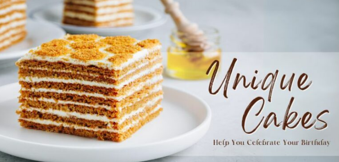
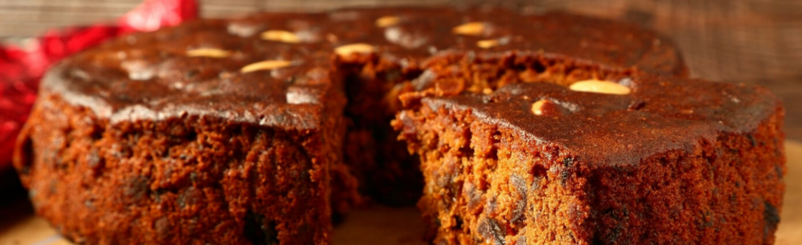

BLOG
Enjoy the delicious cake varieties in our bakery
The decorator will then begin the completion of the cake by icing the thawed, baked cake with a scratch coat to keep the crumbs from falling with the desired icing flavor, then a full coat of icing. The icing is smoothed out with a trowel and the layers of the cake are stacking it if needed using cake dowels to hold them in place, if the cake is small enough to transport while stacked. If fondant is to be used on the cake, it is then colored to the specified tone and rolled out and laid on the cake, pressed to cover the entirety of the cake, molded and smoothed. Depending on the cake, the decorator may airbrush the fondant covered cake before putting the finish touchesThe baker will go over the size of the desired cake, the price per slice, as well as the art and decorating charge specific to the cake that is being ordered.
The decorator will then begin the completion of the cake by icing the thawed, baked cake with a scratch coat to keep the crumbs from falling with the desired icing flavor, then a full coat of icing. The icing is smoothed out with a trowel and the layers of the cake are stacking it if needed using cake dowels to hold them in place, if the cake is small enough to transport while stacked. If fondant is to be used on the cake, it is then colored to the specified tone and rolled out and laid on the cake, pressed to cover the entirety of the cake, molded and smoothed. Depending on the cake, the decorator may airbrush the fondant covered cake before putting the finish touchesThe baker will go over the size of the desired cake, the price per slice, as well as the art and decorating charge specific to the cake that is being ordered.
The decorator will then begin the completion of the cake by icing the thawed, baked cake with a scratch coat to keep the crumbs from falling with the desired icing flavor, then a full coat of icing. The icing is smoothed out with a trowel and the layers of the cake are stacking it if needed using cake dowels to hold them in place, if the cake is small enough to transport while stacked. If fondant is to be used on the cake, it is then colored to the specified tone and rolled out and laid on the cake, pressed to cover the entirety of the cake, molded and smoothed. Depending on the cake, the decorator may airbrush the fondant covered cake before putting the finish touchesThe baker will go over the size of the desired cake, the price per slice, as well as the art and decorating charge specific to the cake that is being ordered.
The decorator will then begin the completion of the cake by icing the thawed, baked cake with a scratch coat to keep the crumbs from falling with the desired icing flavor, then a full coat of icing. The icing is smoothed out with a trowel and the layers of the cake are stacking it if needed using cake dowels to hold them in place, if the cake is small enough to transport while stacked. If fondant is to be used on the cake, it is then colored to the specified tone and rolled out and laid on the cake, pressed to cover the entirety of the cake, molded and smoothed. Depending on the cake, the decorator may airbrush the fondant covered cake before putting the finish touchesThe baker will go over the size of the desired cake, the price per slice, as well as the art and decorating charge specific to the cake that is being ordered.
A bakery is an establishment that produces and
sells flour-based foodbaked in an oven such as
bread, cookies, cakes, doughnuts, bagels,
pastries, and pies. Some retail bakeries are also
categorized as cafés, serving coffee and tea to
customers who wish to consume the baked
goods on the premises.
Court Road
Nagercoil-629001
Tamilnadu.
04652-234784/04652-278789
KP ROAD,RVPURAM
Nagercoil-629001
Tamilnadu.
04652-234784/04652-278789
mail@greatestbakery.in